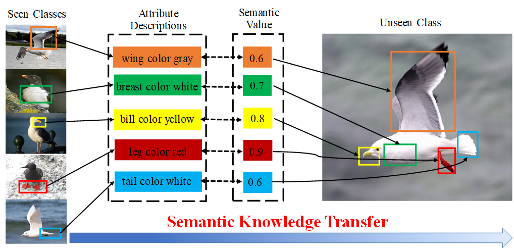
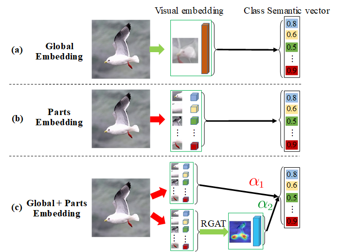

Shiming Chen 陈使明PhD student
1037 Luoyu Road,
|
 |


Biography
I am currently a Third-year PhD student in School of Electronic Information and Communications at Huazhong University of Science and Technology, under the supervision by Prof. Xinge You. My current research interests span computer vision and machine learning with a series of topics, such as generative modeling and learning, zero-shot learning, and visual-and-language learning.
I'm Looking forward to a position for work or postdoc researcher, please feel free to drop me an email if you have the relevant position.
News
Publications

|
Semantic Compression Embedding for Generative Zero-Shot Learning. Ziming Hong*, Shiming Chen*#, Guo-Sen Xie, Wenhan Yang, Jian Zhao, Yuanjie Shao, Qinmu Peng, Xinge You# (*:co-first author; #:corresponding author) The 31th International Joint Conference on Artificial Intelligence ( IJCAI ), 2022. (CCF-A) |
|  | MSDN: Mutually Semantic Distillation Network for Zero-Shot Learning.[arXiv][Code] Shiming Chen, Ziming Hong, Guo-Sen Xie, Wenhan Yang, Qinmu Peng, Kai Wang, Jian Zhao, Xinge You. IEEE/CVF Conference on Computer Vision and Pattern Recognition ( CVPR ), 2022. (CCF-A) |
|
|
TransZero: Attribute-guided Transformer for Zero-Shot Learning.
[PDF]
[arXiv]
[Code] Shiming Chen*, Ziming Hong*, Yang Liu, Guo-Sen Xie, Baigui Sun, Hao Li, Qinmu Peng, Ke Lu, Xinge You. (*:co-first author) Thirty-Sixth AAAI Conference on Artificial Intelligence ( AAAI ), 2022. (CCF-A) |

|
HSVA: Hierarchical Semantic-Visual Adaptation for Zero-Shot Learning.[PDF][arXiv][Code] Shiming Chen, Guo-Sen Xie, Qinmu Peng, Yang Liu, Baigui Sun, Hao Li, Xinge You, Ling Shao. Annual Conference on Neural Information Processing Systems ( NeurIPS ), 2021. (CCF-A) |

|
FREE: Feature Refinement for Generalized Zero-shot Learning.
[PDF]
[arXiv]
[Code] Shiming Chen, Wenjie Wang, Beihao Xia, Qinmu Peng, Xinge You, Feng Zheng, Ling Shao. IEEE International Conference on Computer Vision ( ICCV ), 2021. (CCF-A) |

|
Norm-guided Adaptive Visual Embedding for Zero-Shot Sketch-Based Image Retrieval.
[PDF] Wenjie Wang, Yufeng Shi, Shiming Chen, Qinmu Peng, Feng Zheng, Xinge You The 30th International Joint Conference on Artificial Intelligence ( IJCAI ), 2021. (CCF-A) |
|  | GNDAN: Graph Navigated Dual Attention Network for Zero-Shot Learning.
[Code]
[PDF] Shiming Chen, Ziming Hong, Guo-sen Xie, Qinmu Peng, Xinge You, Weiping Ding, Ling Shao. IEEE Transactions on Neural Networks and Learning Systems ( TNNLS), to appear, 2022. (SCI, IF=10.451) |

|
CDE-GAN: Cooperative Dual Evolution Based Generative Adversarial Network.
[PDF]
[arXiv]
[Project Page] Shiming Chen, Wenjie Wang, Beihao Xia, Xinge You, Qinmu Peng, Zehong Cao, Weiping Ding. IEEE Transactions on Evolutionary Computation ( TEVC ), 25:986-1000, 2021. (SCI, IF=11.554) |

|
Semi-Supervised Feature Learning for Improving Writer Identification.
[Code] Shiming Chen, Yisong Wang, Chin-Teng Lin, Weiping Ding, Zehong Cao. Information Sciences ( INS ), 482:156-170, 2019. (SCI, IF=6.795) |

|
A Robust Offline Writer Identification Method.
[Code] Shiming Chen, Yisong Wang. ACTA AUTOMATICA SINICA (自动化学报), 46(1):108-116, 2020. (In Chinese, CAA-A,CCF-A,卓越期刊) |
Industrial Experience
-
Tencent, AI Lab.Jan. 2022 – Present
Research Intern
Topic: Zero-shot Learning, Visual-and-Language System
-
Alibaba DAMO Academy, Machine Intelligence, Vision Lab. Hosted by Rong JinMay. 2021 – Oct. 2021
Research Intern
Topic: Zero-shot Learning, Domain Adaptation, Transformer
-
Fortsense, In-Screen Fingerprint Group.Apr. 2020 – Sep. 2020
Research Intern
Topic: Image Retrieval, Signal Verification
Academic Experience:Reviewer
External Conference Reviewers: IJCAI'21, ACM MM'21, ICCV'21, IJCAI'22, AAAI'22, CVPR'22, ECCV'22.
Invited Talks
-
Extreme Mart (极市)Feb. 2022
Title: Research on Key Technology for Zero-shot Learning
Link: [Bilibili] -
AI TIMEFeb. 2022
Title: 基于层次适应的零样本学习
Link: [Bilibili] -
CVTEDec. 2021
Title: The Overview of Zero-Shot Learning
-
Tencent AI LabDec. 2021
Title: The Frontiers in Zero-Shot Learning
-
Alibaba DAMO AcademicAug. 2021
Title: HSVA: Hierarchical Semantic-Visual Adaptation for Zero-Shot Learning
© Shiming Chen | Last updated: April 15 2022